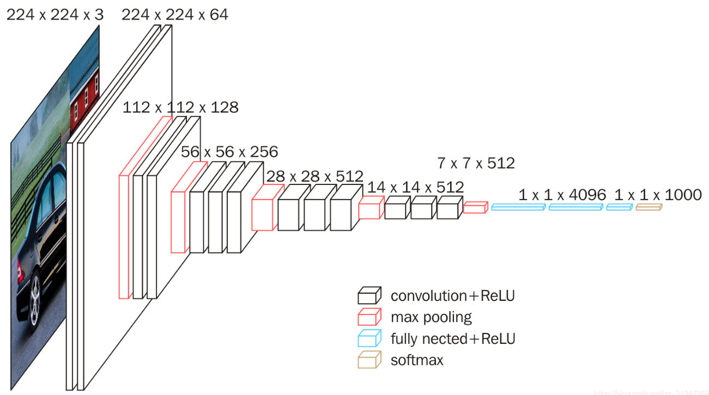
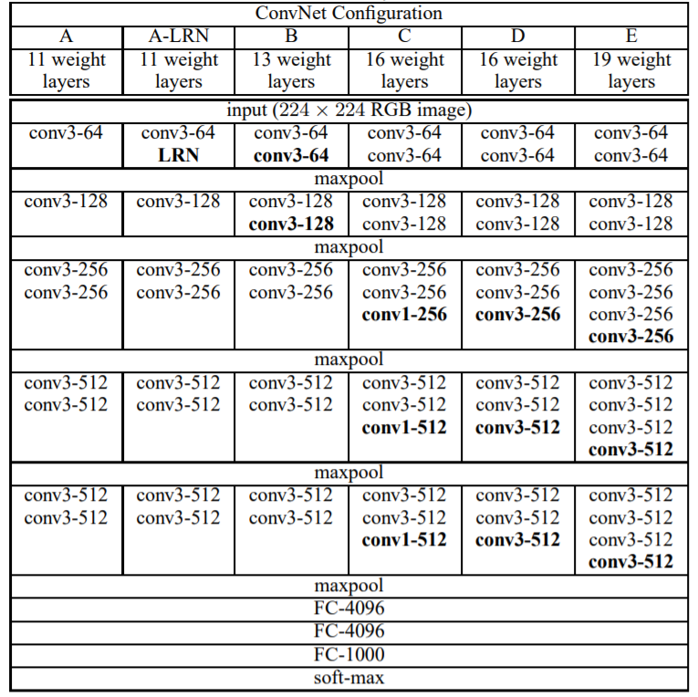

概述
VGGNet是牛津大学计算机视觉几何组(Visual Geometry Group)和Google DeepMind共同研发出的卷积神经网络，于ILSVRC-2014分类竞赛中达到了Top-5 7.32%的错误率，获得亚军，冠军为GoogLeNet，虽然排名第二，但差距很小，且VGGNet在各项迁移学习任务中地表现却优于后者。
既然与GoogLeNet同出一年，那么设计上有些相同的思想也不足为奇，比如说都是为了研究深度对于神经网络的影响，都是基于AlexNet结构进行模型构造，都使用了Network In Network中的某些思想等。
论文：Very Deep Convolutional Networks for Large-Scale Image Recognition
网络详解

注：上图为VGG-16结构图。
-
VGGNet中统一使用了3×3的卷核和2×2的池化窗口。与AlexNet不同，VGG全部采用了3×3的卷积核。不难发现，5×5卷积得到的感受野和两个3×3卷积的堆叠得到的感受野相同，7×7卷积的感受野和三个3×3卷积的堆叠得到的感受野相同，但比起大卷积，3×3卷积的优势在于：
- 增加了非线性映射，这会使决策函数更加具有判别性，即3×3卷积-非线性函数-3×3卷积-非线性函数的结构比5×5卷积-非线性函数的结构更加具有表现力。
- 参数量小。假设输入输出都为C个通道，7×7的卷积需要7×7×C×C=49C2个参数，而3个堆叠的3×3卷积只需要(3×3×C×C)×3=27C2个参数。
-
去除了AlexNet和GoogLeNet中使用的LRN，作者通过实验发现，LRN对于精度没有提升，反而会增加时间和内存消耗
-
作者根据不同深度进行了多组对比实验，最后结果是VGG-16和VGG-19明显优于其他网络，所以我们通常所说的VGG或者VGGNet一般是指VGG-16或VGG-19，具体的各个网络结构如下图所示。与GoogLeNet相同的一点是， 作者也尝试了1×1的卷积，给出的结论是：1×1卷积确实有效，但效果不如3×3卷积好。个人认为1×1卷积的主要优势在于改变维度（升维或降维），其次才是增加非线性，堆叠多个3×3的卷积可以在提取空间特征的同时增加非线性，GoogLeNet中发现1×1卷积有用的原因很可能是其沿用了AlexNet中的大卷积（5×5卷积和7×7卷积），所以需要1×1卷积来增加非线性。

总结
-
相较于之前的AlexNet和GoogLeNet，VGG-16的优点是不言而喻的：结构简单。VGGNet给出了以下两个结论：
-
用3×3卷积核的堆叠替代5×5或7×7卷积核能取得更好的效果。
-
验证了增加深度可以提高网络性能。
-
-
VGGNet的缺点是参数量过大，VGG-16共含138M的参数，全连接层含~124M的参数，第一层全连接层含7×7×512×4096~103M的参数，也就是说大部分的参数产生于第一层全连接层，所以想要降低VGG的参数量必然要从全连接层入手。
-
VGG中比较有趣的一点是，随着网络的加深，尺寸会减半，而深度会翻倍，个人猜测设计的思想是每次特征图尺寸减半，感受野的宽、高会翻倍，每个特征点必然包含更多信息，所以需要用两倍的特征值来表示。
-
关于上面一点，还有一些思考，比如说特征图从224×224×64变成112×112×128，宽、高减半，特征图的深度从64变成了128，这里的深度不一定只能变成128，保持64不变可能也可以，变成256可能也可以，或者是任何一个数字都可以，但128更加符合直觉（即用两倍的特征值来表示宽、高翻倍后的感受野），且“特征图宽、高减半，深度翻倍”这个做法通过大量实验证明可行。我给出上述猜测的原因是1×1卷积的降维，如果经过某个卷积层后的特征图可以进行降维，然后继续计算，且得到不错的结果，说明实际上该特征图是“维度冗余”的，即可以用更少的特征层来表达当前的信息，当前的特征层其实是一种稀疏的形式。这只是个人的一些猜想，具体是否是这样还需要大量实验的佐证。